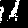

library(tensorflow)
library(keras)
library(tfdatasets)Writing a training loop from scratch
Complete guide to writing low-level training & evaluation loops.
Setup
Introduction
Keras provides default training and evaluation loops, fit() and evaluate(). Their usage is covered in the guide Training & evaluation with the built-in methods.
If you want to customize the learning algorithm of your model while still leveraging the convenience of fit() (for instance, to train a GAN using fit()), you can subclass the Model class and implement your own train_step() method, which is called repeatedly during fit(). This is covered in the guide Customizing what happens in fit().
Now, if you want very low-level control over training & evaluation, you should write your own training & evaluation loops from scratch. This is what this guide is about.
Using the GradientTape: a first end-to-end example
Calling a model inside a GradientTape scope enables you to retrieve the gradients of the trainable weights of the layer with respect to a loss value. Using an optimizer instance, you can use these gradients to update these variables (which you can retrieve using model$trainable_weights).
Let’s consider a simple MNIST model:
inputs <- layer_input(shape = shape(784), name = "digits")Loaded Tensorflow version 2.9.1outputs <- inputs %>%
layer_dense(64, activation = "relu") %>%
layer_dense(64, activation = "relu") %>%
layer_dense(10, name = "predictions")
model <- keras_model(inputs = inputs, outputs = outputs)Let’s train it using mini-batch gradient with a custom training loop. First, we’re going to need an optimizer, a loss function, and a dataset:
# Instantiate an optimizer.
optimizer <- optimizer_sgd(learning_rate = 1e-3)
# Instantiate a loss function.
loss_fn <- loss_sparse_categorical_crossentropy(from_logits = TRUE)
# Prepare the training dataset.
batch_size <- 64
c(c(x_train, y_train), c(x_test, y_test)) %<-% dataset_mnist()
x_train <- x_train %>% array_reshape(dim = c(60000, 784))/255
x_test <- x_test %>% array_reshape(dim = c(10000, 784))/255
# Reserve 10,000 samples for validation.
x_val <- x_train[-(1:50000),]
y_val <- y_train[-(1:50000)]
x_train <- x_train[(1:50000),]
y_train <- y_train[(1:50000)]
# Prepare the training dataset.
train_dataset <- list(x_train, y_train) %>%
tensor_slices_dataset() %>%
dataset_shuffle(buffer_size = 1024) %>%
dataset_batch(batch_size)
# Prepare the validation dataset.
val_dataset <- list(x_val, y_val) %>%
tensor_slices_dataset() %>%
dataset_batch(batch_size)Here’s our training loop:
- We open a
forloop that iterates over epochs - For each epoch, we open a
forloop that iterates over the dataset, in batches - For each batch, we open a
GradientTape()scope - Inside this scope, we call the model (forward pass) and compute the loss
- Outside the scope, we retrieve the gradients of the weights of the model with regard to the loss
- Finally, we use the optimizer to update the weights of the model based on the gradients
Note
In the example train_dataset is a TensorFlow Dataset, thus it can’t be iterated in normal R for loops. That’s why we wrap the second loop into a autograph call. autograph will compile the expression into efficient TensorFlow code to quickly evaluate the loop.
epochs <- 2
for(epoch in seq_len(epochs)) {
cat("Start of epoch ", epoch, "\n")
# Iterate over the batches of the dataset.
tfautograph::autograph(for (batch in train_dataset) {
# Open a GradientTape to record the operations run
# during the forward pass, which enables auto-differentiation.
with(tf$GradientTape() %as% tape, {
# Run the forward pass of the layer.
# The operations that the layer applies
# to its inputs are going to be recorded
# on the GradientTape.
logits <- model(batch[[1]], training = TRUE) # Logits for this minibatch
# Compute the loss value for this minibatch.
loss_value <- loss_fn(batch[[2]], logits)
})
# Use the gradient tape to automatically retrieve
# the gradients of the trainable variables with respect to the loss.
grads <- tape$gradient(loss_value, model$trainable_weights)
# Run one step of gradient descent by updating
# the value of the variables to minimize the loss.
optimizer$apply_gradients(zip_lists(grads, model$trainable_weights))
})
}Start of epoch 1
Start of epoch 2 Low-level handling of metrics
Let’s add metrics monitoring to this basic loop.
You can readily reuse the built-in metrics (or custom ones you wrote) in such training loops written from scratch. Here’s the flow:
- Instantiate the metric at the start of the loop
- Call
metric$update_state()after each batch - Call
metric$result()when you need to display the current value of the metric - Call
metric$reset_states()when you need to clear the state of the metric (typically at the end of an epoch)
Let’s use this knowledge to compute sparse_categorical_accuracy on validation data at the end of each epoch:
# Get model
inputs <- layer_input(shape = shape(784), name = "digits")
outputs <- inputs %>%
layer_dense(64, activation = "relu") %>%
layer_dense(64, activation = "relu") %>%
layer_dense(10, name = "predictions")
model <- keras_model(inputs = inputs, outputs = outputs)
# Instantiate an optimizer.
optimizer <- optimizer_sgd(learning_rate = 1e-3)
# Instantiate a loss function.
loss_fn <- loss_sparse_categorical_crossentropy(from_logits = TRUE)
# Prepare the metrics.
train_acc_metric <- metric_sparse_categorical_accuracy()
val_acc_metric <- metric_sparse_categorical_accuracy()Here’s our training & evaluation loop:
epochs <- 2
for(epoch in seq_len(epochs)) {
cat("Start of epoch ", epoch, "\n")
tfautograph::autograph(for (batch in train_dataset) {
with(tf$GradientTape() %as% tape, {
logits <- model(batch[[1]], training = TRUE)
loss_value <- loss_fn(batch[[2]], logits)
})
grads <- tape$gradient(loss_value, model$trainable_weights)
optimizer$apply_gradients(zip_lists(grads, model$trainable_weights))
# Update training metric.
train_acc_metric$update_state(batch[[2]], logits)
})
train_acc <- as.numeric(train_acc_metric$result())
cat("Training acc over epoch: ", train_acc, "\n")
train_acc_metric$reset_states()
# Run a validation loop at the end of each epoch.
tfautograph::autograph(for(batch in val_dataset) {
val_logits <- model(batch[[1]], training = FALSE)
# Update val metrics
val_acc_metric$update_state(batch[[2]], val_logits)
})
val_acc <- as.numeric(val_acc_metric$result())
cat("Validation acc over epoch: ", val_acc, "\n")
val_acc_metric$reset_states()
}Start of epoch 1
Training acc over epoch: 0.29306
Validation acc over epoch: 0.4955
Start of epoch 2
Training acc over epoch: 0.5761
Validation acc over epoch: 0.6766 It’s common to extract out the expressin inside the second loop into a new function called train_step. For example:
train_step <- function(batch) {
with(tf$GradientTape() %as% tape, {
logits <- model(batch[[1]], training = TRUE)
loss_value <- loss_fn(batch[[2]], logits)
})
grads <- tape$gradient(loss_value, model$trainable_weights)
optimizer$apply_gradients(zip_lists(grads, model$trainable_weights))
# Update training metric.
train_acc_metric$update_state(batch[[2]], logits)
}Low-level handling of losses tracked by the model
Layers & models recursively track any losses created during the forward pass by layers that call self$add_loss(value). The resulting list of scalar loss values are available via the property model$losses at the end of the forward pass.
If you want to be using these loss components, you should sum them and add them to the main loss in your training step.
Consider this layer, that creates an activity regularization loss:
layer_activity_regularization <- new_layer_class(
"activity_regularization",
call = function(inputs) {
self$add_loss(1e-2 * tf$reduce_sum(inputs))
inputs
}
)Let’s build a really simple model that uses it:
inputs <- layer_input(shape = shape(784), name = "digits")
outputs <- inputs %>%
layer_dense(64, activation = "relu") %>%
# Insert activity regularization as a layer
layer_activity_regularization() %>%
layer_dense(64, activation = "relu") %>%
layer_dense(10, name = "predictions")
model <- keras_model(inputs = inputs, outputs = outputs)Here’s what our training step should look like now:
train_step <- function(batch) {
with(tf$GradientTape() %as% tape, {
logits <- model(batch[[1]], training = TRUE)
loss_value <- loss_fn(batch[[2]], logits)
# Add any extra losses created during the forward pass.
loss_value <- loss_value + do.call(sum, model$losses)
})
grads <- tape$gradient(loss_value, model$trainable_weights)
optimizer$apply_gradients(zip_lists(grads, model$trainable_weights))
train_acc_metric$update_state(batch[[2]], logits)
loss_value
}Summary
Now you know everything there is to know about using built-in training loops and writing your own from scratch.
To conclude, here’s a simple end-to-end example that ties together everything you’ve learned in this guide: a DCGAN trained on MNIST digits.
End-to-end example: a GAN training loop from scratch
You may be familiar with Generative Adversarial Networks (GANs). GANs can generate new images that look almost real, by learning the latent distribution of a training dataset of images (the “latent space” of the images).
A GAN is made of two parts: a “generator” model that maps points in the latent space to points in image space, a “discriminator” model, a classifier that can tell the difference between real images (from the training dataset) and fake images (the output of the generator network).
A GAN training loop looks like this:
- Train the discriminator.
- Sample a batch of random points in the latent space.
- Turn the points into fake images via the “generator” model.
- Get a batch of real images and combine them with the generated images.
- Train the “discriminator” model to classify generated vs. real images.
- Train the generator.
- Sample random points in the latent space.
- Turn the points into fake images via the “generator” network.
- Get a batch of real images and combine them with the generated images.
- Train the “generator” model to “fool” the discriminator and classify the fake images as real.
For a much more detailed overview of how GANs works, see Deep Learning with Python.
Let’s implement this training loop. First, create the discriminator meant to classify fake vs real digits:
discriminator <- keras_model_sequential(
name = "discriminator",
input_shape = shape(28, 28, 1)
) %>%
layer_conv_2d(64, c(3, 3), strides = c(2, 2), padding = "same") %>%
layer_activation_leaky_relu(alpha = 0.2) %>%
layer_conv_2d(128, c(3, 3), strides = c(2, 2), padding = "same") %>%
layer_activation_leaky_relu(alpha = 0.2) %>%
layer_global_max_pooling_2d() %>%
layer_dense(1)
summary(discriminator)Model: "discriminator"
____________________________________________________________________________
Layer (type) Output Shape Param #
============================================================================
conv2d_1 (Conv2D) (None, 14, 14, 64) 640
leaky_re_lu_1 (LeakyReLU) (None, 14, 14, 64) 0
conv2d (Conv2D) (None, 7, 7, 128) 73856
leaky_re_lu (LeakyReLU) (None, 7, 7, 128) 0
global_max_pooling2d (GlobalMaxP (None, 128) 0
ooling2D)
dense_6 (Dense) (None, 1) 129
============================================================================
Total params: 74,625
Trainable params: 74,625
Non-trainable params: 0
____________________________________________________________________________Then let’s create a generator network, that turns latent vectors into outputs of shape (28, 28, 1) (representing MNIST digits):
latent_dim <- 128
generator <- keras_model_sequential(
input_shape = shape(latent_dim),
name = "generator"
) %>%
# We want to generate 128 coefficients to reshape into a 7x7x128 map
layer_dense(7 * 7 * 128) %>%
layer_activation_leaky_relu(alpha = 0.2) %>%
layer_reshape(c(7, 7, 128)) %>%
layer_conv_2d_transpose(128, c(4, 4), strides = c(2, 2), padding = "same") %>%
layer_activation_leaky_relu(alpha = 0.2) %>%
layer_conv_2d_transpose(128, c(4, 4), strides = c(2, 2), padding = "same") %>%
layer_activation_leaky_relu(alpha = 0.2) %>%
layer_conv_2d(1, c(7, 7), padding = "same", activation = "sigmoid")Here’s the key bit: the training loop. As you can see it is quite straightforward. The training step function only takes 17 lines.
# Instantiate one optimizer for the discriminator and another for the generator.
d_optimizer <- optimizer_adam(learning_rate = 0.0003)
g_optimizer <- optimizer_adam(learning_rate = 0.0004)
# Instantiate a loss function.
loss_fn <- loss_binary_crossentropy(from_logits = TRUE)
train_step <- function(real_images) {
# Sample random points in the latent space
random_latent_vectors <- tf$random$normal(shape = shape(batch_size, latent_dim))
# Decode them to fake images
generated_images <- generator(random_latent_vectors)
# Combine them with real images
combined_images <- tf$concat(list(generated_images, real_images), axis = 0L)
# Assemble labels discriminating real from fake images\
labels <- tf$concat(list(
tf$ones(shape(batch_size, 1)),
tf$zeros(shape(real_images$shape[[1]], 1))),
axis = 0L
)
# Add random noise to the labels - important trick!
labels <- labels + 0.05 * tf$random$uniform(labels$shape)
# Train the discriminator
with(tf$GradientTape() %as% tape, {
predictions <- discriminator(combined_images)
d_loss <- loss_fn(labels, predictions)
})
grads <- tape$gradient(d_loss, discriminator$trainable_weights)
d_optimizer$apply_gradients(zip_lists(grads, discriminator$trainable_weights))
# Sample random points in the latent space
random_latent_vectors <- tf$random$normal(shape = shape(batch_size, latent_dim))
# Assemble labels that say "all real images"
misleading_labels <- tf$zeros(shape(batch_size, 1))
# Train the generator (note that we should *not* update the weights
# of the discriminator)!
with(tf$GradientTape() %as% tape, {
predictions <- discriminator(generator(random_latent_vectors))
g_loss <- loss_fn(misleading_labels, predictions)
})
grads <- tape$gradient(g_loss, generator$trainable_weights)
g_optimizer$apply_gradients(zip_lists(grads, generator$trainable_weights))
list(d_loss, g_loss, generated_images)
}Let’s train our GAN, by repeatedly calling train_step on batches of images. Since our discriminator and generator are convnets, you’re going to want to run this code on a GPU.
# Prepare the dataset. We use both the training & test MNIST digits.
batch_size <- 64
c(c(x_train, y_train), c(x_test, y_test)) %<-% dataset_mnist()
x_train[] <- x_train/255
x_test[] <- x_test/255
dataset <- tensor_slices_dataset(x_train) %>%
dataset_concatenate(tensor_slices_dataset(x_test)) %>%
dataset_map(function(x) {
tf$cast(tf$expand_dims(x, -1L), tf$float32)
}) %>%
dataset_shuffle(1024) %>%
dataset_batch(batch_size)
epochs <- 1 # In practice you need at least 20 epochs to generate nice digits.
save_dir <- "./"
for (epoch in seq_len(epochs)) {
cat("\nStart epoch ", epoch, "\n")
tfautograph::autograph(for (real_images in dataset) {
c(d_loss, g_loss, generated_images) %<-% train_step(real_images)
})
}
Start epoch 1 generated_images[1,,,] %>%
image_array_save(path = "generated_img.png")
That’s it! You’ll get nice-looking fake MNIST digits after just ~30s of training on the Colab GPU.